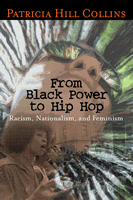

<body bgcolor="#FFFFFF" text="#000000" link="#0000FF" vlink="#CC0000" alink="#CC0000"><center><hr width="350" size="1" align="center" noshade>A provocative analysis of the new contours of black nationalism and feminism in America<hr width="350" size="1" align="center" noshade><p><a href="https://cdcshoppingcart.uchicago.edu/Cart/ChicagoBook.aspx?ISBN=9781592130917&&PRESS=temple" target="_top">Buy this book!</a> | <a href="https://cdcshoppingcart.uchicago.edu/Cart/Cart.aspx?PRESS=temple" target="_top">View Cart</a> | <a href="https://cdcshoppingcart.uchicago.edu/Cart/Cart.aspx?PRESS=temple" target="_top">Check Out</a></p><p></p></center><!--none//--><h1>From Black Power to Hip Hop</h1>
<H2>Racism, Nationalism, and Feminism</H2>
<h3>Patricia Hill Collins</h3>
<P>cloth 1-59213-091-7 $70.50, Jan 06, <FONT COLOR=#990033>Available</FONT>
<br>paper 1-59213-092-5 $26.95, Jan 06, <FONT COLOR=#990033>Available</FONT>
<br>Electronic Book 1-59213-790-3 $26.95 <FONT COLOR=#990033>Available</FONT>
<BR> 256 pp
6x9
</P><h3 align="center"><P><font color="#996633">Honorable Mention at the Gustavus Myers Outstanding Book Awards,
2006</font></P>
</H3>
<BLOCKQUOTE><I>"Patricia Hill Collins provides a road map for the complex journey 'from Black Power to Hip Hop.' She begins with identifying how the legacy of a core racial triangle operates in different political and economic eras to reproduce racial inequalities. Her interrogation and assessment of the challenges that new racism poses for nationalist and feminist thinking can guide our unmasking of this new color blind society."</i>
<br>&#151<b>Elizabeth Higginbotham</b>, Professor of Sociology, University of Delaware, and author of <i>Too Much To Ask: Black Women in the Era of Integration</i><i></I></BLOCKQUOTE>
<p>Despite legislation designed to eliminate unfair racial practices, the United States continues to struggle with a race problem. Some thinkers label this a "new" racism and call for new political responses to it. Using the experiences of African American women and men as a touchstone for analysis, Patricia Hill Collins examines new forms of racism as well as political responses to it.
<p>In this incisive and stimulating book, renowned social theorist Patricia Hill Collins investigates how nationalism has operated and re-emerged in the wake of contemporary globalization and offers an interpretation of how black nationalism works today in the wake of changing black youth identity. Hers is the first study to analyze the interplay of racism, nationalism, and feminism in the context of twenty-first century black America.
<p><i>From Black Power to Hip Hop</i> covers a wide range of topics including the significance of race and ethnicity to the American national identity; how ideas about motherhood affect population policies; African American use of black nationalism ideologies as anti-racist practice; and the relationship between black nationalism, feminism, and women in the hip-hop generation.
<BR>&nbsp;<h2>Excerpt</h2><P>Excerpt available at <a href="http://www.temple.edu/tempress">www.temple.edu/tempress</a></p>
<BR>&nbsp;<h2>Reviews</h2>
<p><i>"Patricia Hill Collins is one of the most insightful and stimulating voices in contemporary sociology. In these essays, she opens up new insights into contemporary American society and also into broad and enduring issues of sociological theory. She informs us about race and gender, but also through a discussion of race and gender informs us about society and culture more generally."</i>
<br>&#151<b>Craig Calhoun</b>, University Professor of the Social Sciences, New York University
<p><i>"Patricia Hill Collins's steady intellect forges seamless wholes out of seemingly contradictory phenomena, notably black nationalism, feminism, and democracy. With her customary insight, Collins offers both trenchant analysis and strategies of empowerment. A most welcome analysis in these times!"</i>
<br>&#151<b>Nell Irvin Painter</b>, author of <i>Creating Black Americans: African-American History and Its Meanings, 1619 to the Present</i>
<p><i>"[H]er book offers a refreshing view of the politics on the ground, where people matter more than identities and the ideologies embedded within them."</i>
<br>&#151<b><i>Ms. Magazine</I></b>
<p><i>"Collins has done us all the service of beginning a new and welcome conversation about race."</i>
<br>&#151<b><i>Philadelphia City Paper</i></b>
<p><i>"Hill Collins' policy of opening dialogue about topics many are too afraid to touch has earned her a place alongside academic rock stars like bell hooks and Cornel West."</i>
<br>&#151<b><i>Philadelphia Weekly</i></b>
<p><i>"[Collins] offers a lively analysis of "hip hop feminism" espoused by Joan Morgan and other writers.... Also intriguing is her assessment of the divergence within the feminism movement, fueled in part by white feminism's failure to recognize the value of the work women of color do in their communities, resulting in a 'colorblind racism' that has taken the place of active discrimination and leaves young African American women torn between an individualistic feminism and a community-oriented black nationalism.... her analysis of the choices facing women of the hip hop generation is provocative and invaluable."</i>
<br>&#151<b><i>Publishers Weekly</i></b>
<p><i>"Collins provides an insightful consideration of the ways in which the development of a black hip-hop culture has intersected with the color-blind politics of post-civil rights America to produce a generation of African Americans whose public representation belies their actual lived existence.... This text is an invaluable resource for those who want to understand the political and social mechanisms by which America's color-blind policies have been developed and implemented."</i>
<br>&#151;<b><i>Multicultural Review</i></b>
<p><i>"These essays probe deeply into issues of racism, classism, misogyny, and homophobia, and reveal the architecture of racial and gender subordination. They are provocative, hard hitting, and compelling. An outstanding contribution to gender studies and literature on race, ethnicity and contemporary US culture. Summing Up: Essential."</i>
<br>&#151;<b><i><a href="http://www.temple.edu/temple_times/january07/TUPressChoiceawards.html">Choice</a></i></b>
<p><i>"[Collins�] lucid observations form the backdrop of [her] sustained engagement with nationalism, feminism, and racism in a collection that includes signature essays on topics as diverse as American national identity, the contemporary relevance of Afrocentrism, and women�s agency in black community politics."</i>
<br>&#151;<b><i>Signs</i></b>
<p><i>"Collins�s work is always a pleasure to read. She deftly weaves historical analyses, popular culture, literature, and theory to produce a complex portrait of ongoing and systematic racism, relentlessly highlighting the interconnected dynamics of gender inequality as well as other systems of oppression. Each of these essays makes clear that any political response to racism must incorporate an intersectional approach."</i>
<br>&#151;<b><i>Gender and Society</i></b>
<p><i>"[T]he book can serve as good primer...Hill Collins� writing is always composed with a synthesis of historical analyses, popular culture, literature and theory that is often lacking in other academics� social scientific treatises. Any of the six essays within the text makes a clear case that either an organized-collective or individual response to racism, sexism, or capitalism must incorporate an intersectional approach."</i>
<br>&#151;<b><i>Souls: A Critical Journal of Black Politics, Culture and Society</i></b>
<p><i>�The six essays in this volume explore the political realities of the period from the end of Black Power to the ascendancy of hip hop. They focus on the relationship between new racial formations and on political responses to them�.A theme of the volume is Hill�s endeavour to theorise intersectionality, and she focuses on the intersections between race, nation, gender and, to a lesser extent, social class. The aim of this book is to make a case for anti racist group based political struggles that respect individual and human rights which embrace a global analysis of how our lives are interconnected, and are informed by feminism and nationalism.�</i>
<br>&#151<b><i>Sage Race Relations Abstracts</I></b>
<p><i>"In her new book Patricia Hill Collins reminds us why she is one of the most prolific and insightful sociologists to diagnose contemporary racial and sexual politics."</i><br>&#151;<b><i>The African American Review</i></b>
<p><i>"Sociologist Collins turns her eye toward young African American women who have chosen to explore feminism through pop culture instead of academia in this sometimes rousing...anthology of six essays.... She offers a lively analysis of 'hip hop feminism'...Also intriguing is her assessment of the divergence within the feminism movement....[H]er analysis of the choices facing women of the hip hop generation is provocative and invaluable."</i><br>&#151;<b><i>Publishers Weekly</i></b>
<BR>&nbsp;<h2>Contents</h2><P>
<p>Acknowledgments
<br>Introduction: From Black Power to Hip Hop
<p><b>Part I. Race, Family, and the U.S. Nation-State</b>
<br>1. Like One of the Family: Race, Ethnicity, and the Paradox of American National Identity
<br>2. Will the ''Real'' Mother Please Stand Up? Race, Class, and American National Family Planning
<p><b>Part II. Ethnicity, Culture, and Black Nationalist Politics</b>
<br>3. Black Nationalism and African American Ethnicity: Afrocentrism as Civil Religion
<br>4. When Fighting Words Are Not Enough: The Gendered Content of Afrocentrism
<p><b>Part III. Feminism, Nationalism, and African American Women</b>
<br>5. Why Collective Identity Politics Matter: Feminism, Nationalism, and Black Women's Community Work
<br>6. Is the Personal Still Political? The Women's Movement, Feminism, and Black Women in the Hip-Hop Generation
<p>Notes
<br>References
<br>Index
</P><BR>&nbsp;<H2>About the Author(s)</H2>
<table><tr><td valign="top"><img src="/tempress/authors/1746_au.gif" height="90" width="75"></td><td width="100%" valign="middle"><p><b>Patricia Hill Collins</b> is Professor of Sociology at the University of Maryland, College Park and author of <i>Black Feminist Thought: Knowledge, Consciousness, and the Politics of Empowerment</i> and <i>Fighting Words: Black Women and the Search for Justice</i>.</P></td></tr></table>
<BR><H2>Subject Categories</H2>
<p><A HREF="/tempress/african.html" TARGET="_top">African American Studies</a>
<BR><A HREF="/tempress/women.html" TARGET="_top">Women's Studies</a>
<BR><A HREF="/tempress/sociology.html" TARGET="_top">Sociology</a>
</p>
<BR><h2 class="inpageheading">In the series</H2>
<P><I><a href="http://www.temple.edu/tempress/phsc.html" onMouseOver="window.status='Click for other books in this series!'; return true;" onMouseOut="window.status=''; return true;" target="_top">Politics, History, and Social Change</a></i>, edited by John C. Torpey.
</p><p>This series will disseminate serious works that analyze the social changes that have transformed our world during the twentieth century and beyond. The main topics to be addressed include international migration; human rights; the political uses of history; the past and future of the nation-state; decolonization and the legacy of imperialism; and global inequality. The series will also translate into English outstanding works by scholars writing in other languages.</p>
<p align="center"><a href="https://cdcshoppingcart.uchicago.edu/Cart/ChicagoBook.aspx?ISBN=9781592130917&&PRESS=temple" target="_top">Buy this book!</a> | <a href="https://cdcshoppingcart.uchicago.edu/Cart/Cart.aspx?PRESS=temple" target="_top">View Cart</a> | <a href="https://cdcshoppingcart.uchicago.edu/Cart/Cart.aspx?PRESS=temple" target="_top">Check Out</a></p><p><font face="Arial" size="1"><a href="copyright.html" onMouseOver="window.status='Web Copyright Policy';return true;" onMouseOut="window.status=''" title="Web Copyright Policy">&copy;</a> 2015 <a href="http://www.temple.edu" target="new" onMouseOver="window.status='Link to Temple University home page';return true;" onMouseOut="window.status=''" title="Link to Temple University home page">Temple University</a>. All Rights Reserved. http://www.temple.edu/tempress/titles/1746_reg.html</font></p>